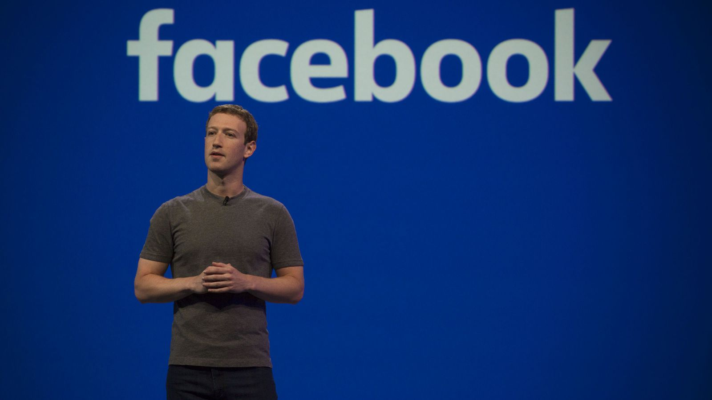

Mark Elliot Zuckerberg nació en White Plains, EE.UU, un 14 de Mayo de 1984.
Mark Zuckerberg es un programador y empresario, su mayor logro ha sido la creación de Facebook.
él y sus compañeros de la universidad desarrollaron esta red social, que actualmente es tan popular,
está en el top 5 de personajes mas ricos del mundo y además es el más joven.
La mayoria de su riqueza va para ayudar en el avance del potencial humano y promover la igualdad.
Con madre psiquiatra y padre dentista y antepasados tanto Alemanes, Austria y Polonia, criado en NJueva York y de religion Judía.
En el instituto de secundaria Ardsley sobresalió en clases; más adelante pasó a la escuela privada Phillips Exeter Academy, donde recibió premios de ciencias.
En 2002, con tan solo 18 años, lanzó un software llamado Synapse Media Player, tanto Microsoft como Apple contactaron con el para hacerse con los derechos del software pero el decidió subirlo a internet de forma gratuita.
En 2003, Mark ingresó en Harvard, donde empezó a desarrollar programas como el "Coursematch", que permitó a los estudiantes ver la lista de otros compañeros de clase, o una web en la que se podía calificar a las estudiantes de la universidad, Facemash.com.
La Universidad de Harvard insistió en que Zuckerberg había hackeado el internet de la universidad para alterar imágenes de los estudiantes sin autorización y para su propio beneficio, algo que era falso.
Mark declaró que pensaba que la información debía ser libre y abierta al público.
Las acciones tomadas por el Consejo Administrativo de Harvard en este asunto no se hicieron públicas.
En 2004 Zuckerberg creó Facebook y se ausentó un año de la Universidad, hasta que un año después abandonó la carrera.
Más tarde volvió a retomar sus estudios y en 2017, finalmente se graduó en Ciencias de la Computación, dando el discurso de cierre en la Universidad de Harvard.
Los hermanos Tyler y Cameron Winklevoss y su amigo Divya Narendra estudiaron en Harvard, ellos le pidieron a Zuckerberg que los ayudara a crear una red social para los estudiantes de la universidad.
Ellos aseguran que Zuckerberg les robó la idea y que retrasó el proyecto mientras trabajaba con las ideas robadas para su propio proyecto, Facebook.
Una denuncia legal fue hecha en 2004 alegando una violación del contrato, apropiación de secretos comerciales y robo de los derechos intelectuales, así como robo de códigos.
Mark declaró que no había sido firmado ningún contrato y que por lo tanto él no era un socio; dijo además que lo que estaban buscando era un daño económico.
En 2010 hubo una alianza entre ConnectU y MySpace para superar el número de usuarios y así catalogarse como la red social de mayor demanda.
Desde su presentación original en Massachusetts, la demanda fue desestimada sin ningún perjuicio en 2007, pero nunca se dictó una sentencia.
Fue retomada muy pronto ante la Corte Distrital de los EE. UU. en Boston y una audiencia preliminar fue programada para el 25 de julio de 2007.6
En la audiencia, el juez dijo al demandante de ConnectU que la demanda no era suficiente y les dio la opción de volverla a hacer.